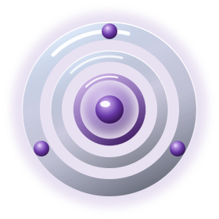
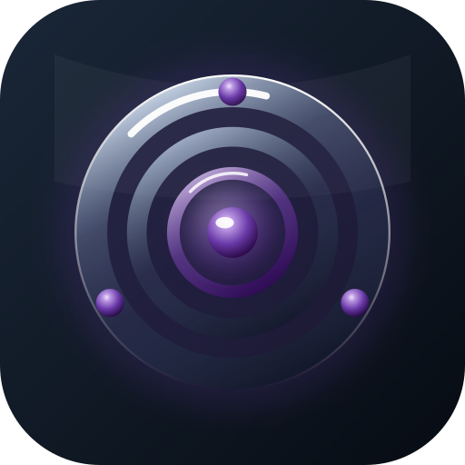
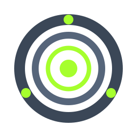
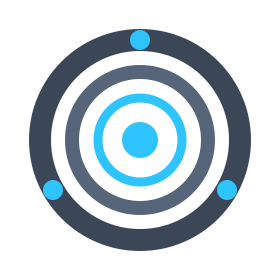
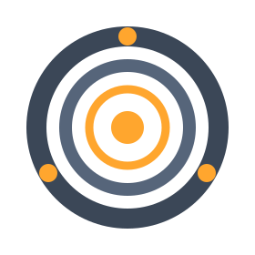
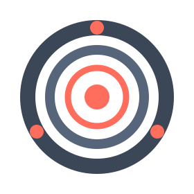

Added usePlugins hooks with the literal ['plugins'] query key and six mutations…
cronos / dashboard
Dashboard
docs/ui-ux-review/brand/)The brand is deep violet (#7A4FB0) — the identity colour for the mark, wordmark, and the idle state. Lime-green is reserved for the running state and must never be a decorative accent (a stray lime reads as “a job is running”). The chrome accent stays per-theme (green / cyan) — see the residual-tension note below.

lockup-h · navbar
mark · 64px+
app-icon · tileSizing rule: full glass mark at ≥64px (hero / app-icon source); mark-flat 24–64px (sidebar, tiles); mono inherits text colour (icon-in-button); favicon below 24px. The wordmark in the lockup is a placeholder typeface — pick & lock one before production (see [06-brand.md]).




Same geometry as the flat mark, recoloured per state — one visual language across backlog → active → waiting → done and run outcomes. The active mark animates (SMIL: rotating orbit + pulsing core) and stands in for the bespoke pulse-dot / RunOverlay glow. Used in context in §07 (harness running node) and §05b (NOW card) below.
Residual tension (by design choice): the chrome accent stays green (light/dark) / cyan (neon) while lime now signals running — so on the green themes the accent and the running-lime are adjacent greens. Acceptable here because they never label the same thing (accent = chrome/primary action; lime = live agent), but if it ever reads ambiguous, the fallback is to adopt brand violet as the chrome accent (the “brand-canonical” option) and free green entirely for running.
Fix: replaces 63 raw red/emerald/amber/violet… classes duplicated across 5+ files. One <Badge tone>, theme-aware everywhere.
Fix: kills the 13px→22px title drift and four container widths. Title size is fixed; breadcrumb + actions slots standardised.
Fix: nav rows get icon+label (was label-only) and a visible focus ring; sidebar padding unified; mobile drawer gains space-context + Escape.
Fix: one card component (radius md = buttons), accent strip keyed to status tone, badges via the recipe, 44px controls, focus ring on child rows, hover lift kept.
↑ continuous hairline guides + per-row connector ticks (NEW); ▾/▸ expand; whole row opens the task. Keyboard: ↑↓ move, ←→ collapse/expand. Drag a row onto another to re-parent; the accent line shows a sibling drop.
Toggle “Dependency DAG” to see the same goal as a layered graph (depends_on edges) instead of containment. Node tone = task status token; running node glows.
Fix: the tree currently indents full cards with no connector lines — hard to scan at depth. Add hairline guides + connector ticks, a compact goal/subgoal/leaf row (progress + child-count for goals, status badge for leaves), and a Tree ⇄ Dependency-DAG view toggle so containment and ordering are one surface. Badges use the §2.1 recipe; drop/reparent affordance in accent.
Tasks and features share the same shell. Header (status + type badge · key/id · title · edit/close), Brief (markdown), and the warning-toned waiting bar are identical. Only the lower zone differs: a task runs an agent → conversation + chat; a feature decomposes → Decompose action + Realizing-goals list. Use the toggle.
Added usePlugins hooks with the literal ['plugins'] query key and six mutations…
+77 −0 · src/hooks/usePlugins.ts
Fix: one DetailShell = <DetailHeader> + <BriefSection> + <WaitingBar> + a swappable footer (TaskRuntime = tabs/conversation/chat · FeatureRuntime = decompose/realizing-goals) + a generic RelationshipList (task deps/children · feature realizing-goals). Today FeatureDetail.tsx re-implements its own header, skeleton, and badge maps (FEATURE_STATE_BADGE violet/indigo/amber/sky + type rose/emerald) — all collapse into the shared shell + <Badge>. Tabs primitive, IconButton row, warning-toned waiting bar; mobile → single column.
The current detail stacks brief + metadata + transcript in one scroll column. This splits it: Context (left) and Conversation (right) scroll independently under one top bar — and a pinned NOW running card always shows what the agent is doing, even while you scroll the transcript. Each pane below scrolls on its own; try it.
Added usePlugins with the literal ['plugins'] key and six mutations; wiring PluginsPanel next.
Layout: shared top bar · left Context (Details/Stats/Trace/Files tabs + brief + relationships, scrolls) · right Conversation = pinned NOW card + scrolling stream + pinned chat. Mobile collapses to Context | Chat tabs.
NOW card (the “what’s it doing” ask): current action + target · model/mode · active subagent · elapsed · tokens · a steps strip (✓ done · ·· running · ⌛ queued). All derivable from the STATUS / tool-entry / subagent-trail data Cronos already parses. aria-live="polite" so screen readers hear step changes. Alternative: promote it to a third “Activity” column for very tool-heavy runs.
Fix: extract repeated metric markup into StatTile + ProgressBar; charts get legends, tooltips, and empty/loading states.
Fix: bump the editor title to the standard scale, replace the hardcoded #22c55e run colour in RunOverlay with the running token (lime, shown glowing), and use the brand active mark on the running node — the same animated SVG can drive every live indicator (board card, NOW card, run node) from one asset.
Fix: one scrim (bg-black/60 + blur), one z-layer, Escape + focus-trap + focus-return, single X close, destructive in danger tone — migrates the 4 ad-hoc modals (scrims ranged /50→/80).
Fix: skeletons reserve space (no layout shift) and replace the spinner-vs-“Loading…” mix; empty states invite the next action; errors (not shown) sit inline in danger tone with a Retry.
Static wireframes — structure & states, not pixel-final. See sibling markdown docs for the full system, findings, and roadmap.